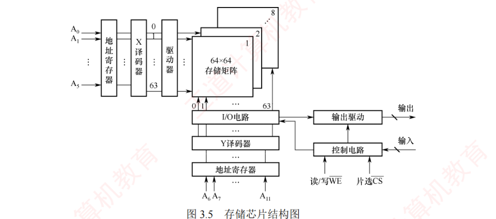
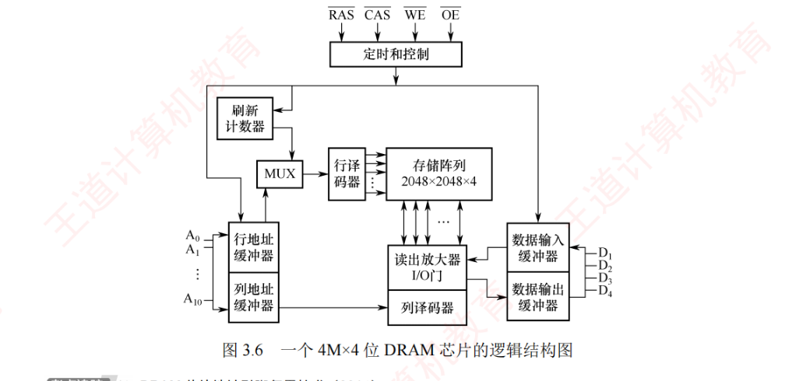
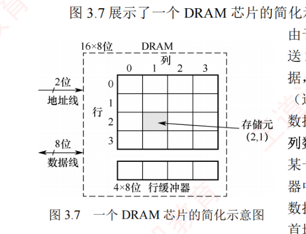
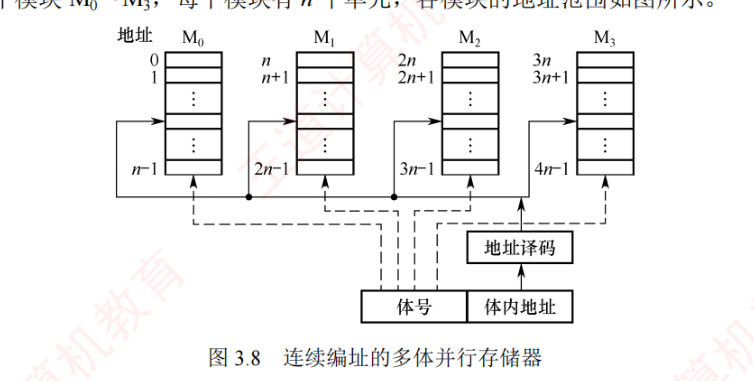
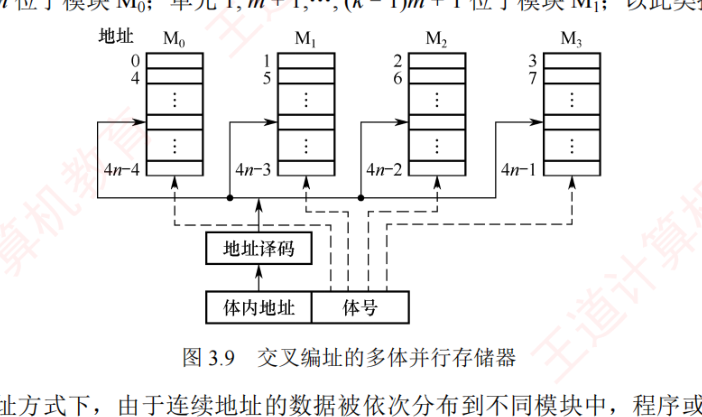
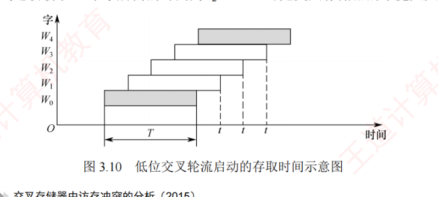

3.2 主存储器
这一节拆开主存看三类器件：半导体随机存取存储器（SRAM 用触发器、DRAM 用电容，3.2.1）、非易失性存储器（ROM 家族与 Flash，3.2.2）、以及靠多模块并行来提速的多模块存储器（3.2.3）。主线一句话：主存主要采用 DRAM，Cache 使用 SRAM；SRAM/DRAM 对比、DRAM 的刷新与地址复用、低位交叉流水存取时间是本节的三大考点。
3.2.1半导体随机存取存储器
随机存取存储器（RAM）分为静态 RAM（SRAM）和动态 RAM（DRAM），二者均为易失性存储器。现代计算机中，主存主要采用 DRAM，而 Cache 使用 SRAM。
1. SRAM 的工作原理
把若干个存储元构成一个存储单元，若干存储单元的集合构成存储体。SRAM 的存储元基于双稳态触发器（六晶体管 MOS），利用电路的两个稳定状态分别表示二进制 0 和 1。其特点是读出为非破坏性读出，无须再生。SRAM 的存取速度快，但集成度低、功耗较大、成本高，通常用于高速缓冲存储器。
2. DRAM 的工作原理
与 SRAM 不同，DRAM 利用栅极电容上存储的电荷来记录信息：有电荷表示 1，无电荷表示 0。其基本单元由一个晶体管和一个电容器构成，结构简单，因此集成度远高于 SRAM。
3. 存储芯片的组成
如图 3.5 所示，存储芯片由存储体、I/O 读/写电路、地址译码器和控制电路等部分组成：
- 存储体（存储矩阵）：存储单元的集合，通过行选择线（X）和列选择线（Y）来选中目标单元，位于同行同列交叉点上的多个位（位平面数）被同时读/写；
- 地址译码器：将输入地址转换为对应输出线上的高电平信号，以驱动相应的读/写电路。译码方式有两种——单译码法（一维译码）仅用一个行译码器，同一行中所有存储元的字线相连构成一个字，可同时读/写，缺点是选择线数量过多；双译码法（二维译码）将地址译码器分为 X（行）和 Y（列）两个部分，通过行与列的交叉点唯一确定一个存储单元，是目前 DRAM 芯片普遍采用的译码结构；
- I/O 电路：用于控制被选中存储单元的读/写，具有放大信号的作用；
- 片选控制线：单个存储芯片容量有限，需将多个芯片组合扩展。访问某个存储单元时，必须「选中」该单元所在的芯片而其他芯片不被选中，因此需要片选控制信号（经片选控制线传输）；
- 读/写控制线：根据 CPU 发出的读/写命令，通过读/写控制线选中单元执行相应操作。

4. DRAM 芯片的关键技术
（1）地址引脚复用技术
DRAM 芯片容量较大，所需地址线数较多。为减少芯片地址引脚数量，通常采用地址引脚复用技术：行地址和列地址通过相同的引脚分两次先后输入（在行选通信号 RAS 与列选通信号 CAS 的控制下），从而使地址引脚数量减少一半。图 3.6 给出了一个 4M×4 位 DRAM 芯片的逻辑结构：该芯片只有 11 个地址引脚（\(\mathrm{A}_0 \sim \mathrm{A}_{10}\)），内部存储阵列采用三维结构，总容量为 2048×2048×4 位，即 4M×4 位；行地址和列地址各需 11 位，共 4 个位平面，在任意行列交叉点上 4 个位平面的存储单元同时被读/写（数据端 4 个引脚，一次同时读/写 4 位数据）。

（2）刷新机制与阵列设计优化
DRAM 芯片需要定期刷新以维持所有信息。刷新时，仅需向芯片提供行地址和行选通信号，即可选中某一行的所有存储单元并执行读操作。由于 DRAM 采用破坏性读出，每次读取后必须立即再生：读出为 0 则将电容完全放电，读出为 1 则重新充电。对于图 3.6 所示的 2048×2048×4 位存储阵列，只需进行 2048 次「按行刷新」即可完成全芯片刷新（刷新无须列地址）。芯片内部的刷新计数器可自动产生刷新行地址，刷新周期定义为对某一特定行完成一次刷新后，到下一次对该行再次刷新的时间间隔。
（3）突发传输与行缓冲
图 3.7 展示了一个 DRAM 芯片的简化示意，容量为 16×8 位，存储阵列为 4 行×4 列。由于采用地址引脚复用技术，仅需 2 根地址线，分时传送 2 位行地址和 2 位列地址；每个存储单元包含 8 位数据，需要 8 根数据线。芯片内部设有一个行缓冲器（通常由 SRAM 实现），用于缓存被选中行中的所有数据，其容量等于一行中所有存储单元的数据总量，即列数×每个存储单元的位数（如 4 列×8 位 = 32 位）。当某一行被选中后，该行数据一次性加载到行缓冲器中，后续可在每个时钟周期连续输出一个存储单元的数据（8 位），从而支持突发传输——在寻址阶段提供首地址，随后连续读取多个相邻存储单元的数据，显著提升有效带宽。

5. 同步 DRAM（SDRAM）
目前更广泛使用的是同步 DRAM（SDRAM）。与传统的异步 DRAM 不同，SDRAM 的数据读/写操作与时钟同步，能够在 CPU 主存总线周期内完成数据传输，在连续访问同一行（页）内的数据时可实现突发传输，显著减少甚至消除等待状态。异步 DRAM 中，CPU 发出地址和控制信号后必须等待一段不确定的延迟才能获得数据或完成写入，期间 CPU 不断轮询存储器的状态信号，无法执行其他任务；而 SDRAM 在系统时钟驱动下工作，CPU 发出地址和控制信号后，在预设的若干时钟周期后返回数据或完成写入，CPU 无须等待，可在延迟期间执行其他指令，显著提升系统性能。
6. SRAM 和 DRAM 的比较
| 特点 | SRAM | DRAM |
|---|---|---|
| 存储信息 | 触发器 | 电容 |
| 破坏性读出 | 非 | 是 |
| 需要刷新 | 不要 | 需要 |
| 送行列地址 | 同时送 | 分两次送（复用） |
| 运行速度 | 快 | 慢 |
| 集成度 | 低 | 高 |
| 存储成本（位价） | 高 | 低 |
| 主要用途 | 高速缓存 | 主机内存 |
3.2.2非易失性存储器
1. 只读存储器（ROM）的特点
根据制造工艺和可编程性，ROM 可分为掩模式 ROM（MROM）、一次可编程 ROM（PROM）和可擦除可编程 ROM（EPROM）等类型：MROM 由厂商固化，用户不可更改；PROM 允许用户进行一次编程；EPROM 虽支持多次编程，但每次擦除需紫外线照射整片芯片，且擦写次数有限、写入速度慢，难以满足高频随机读/写的需求，因此无法替代 RAM。
2. Flash 存储器
Flash 存储器（也称闪存）是一种在 EPROM 基础上发展而来的非易失性存储器，兼具 ROM 与 RAM 的部分优点：断电后信息可长期保存；支持电擦除与在线重写，无须紫外线照射等特殊设备。其读取速度接近 RAM，但写入速度较慢，读写性能不对称。
3. 固态硬盘（Solid State Drive, SSD）
固态硬盘是基于 Flash 存储器构建的存储设备，由控制单元和存储单元（Flash 存储器芯片阵列）组成。它继承了 Flash 存储器的重要特性：非易失性、无机械部件、读取速度快。相较传统硬盘，SSD 具有读写速度更快、功耗低、抗震性强等优势，缺点是价格较高，且写入寿命受限于 Flash 存储器的擦写次数（详见 3.4.2 节）。
3.2.3多模块存储器
为提升存储器吞吐率，可采用多体并行技术——通过多个结构完全相同的存储模块并行工作来提高存储器的吞吐率。由于 CPU 的速度远高于存储器，若能在一个存取周期内连续获取多条指令或多个数据字，便可更充分利用 CPU 资源。根据模块地址方式的不同，多模块存储器可分为连续编址和交叉编址两种结构。
1. 连续编址方式
高位地址为模块号（体号），低位地址为模块内地址（体内地址）。如图 3.8 所示，存储器具有 4 个模块 \(\mathrm{M}_0 \sim \mathrm{M}_3\)，每个模块有 \(n\) 个单元，各模块的地址范围依次为 \(0 \sim n-1\)、\(n \sim 2n-1\)、\(2n \sim 3n-1\)、\(3n \sim 4n-1\)。

在连续编址方式下，低位体内地址总是被送到由高位体号确定的模块内进行寻址。访问一个连续主存块时，总是先在一个模块内访问，直到该模块访问完才转到下一个模块。由于 CPU 按顺序访问存储模块，各模块不能并行访问，因此无法提高存储器的吞吐率。
2. 交叉编址（低位交叉）方式
低位地址用作模块号（体号），高位地址用作模块内地址。设有 \(m\) 个模块，每个模块 \(k\) 个存储单元，则模块号由单元地址对 \(m\) 取模决定，即模块号 = 单元地址 mod \(m\)。如图 3.9 所示，单元 \(0, m, \cdots, (k-1)m\) 位于模块 \(\mathrm{M}_0\)；单元 \(1, m+1, \cdots, (k-1)m+1\) 位于模块 \(\mathrm{M}_1\)，以此类推。

在交叉编址方式下，连续地址的数据被依次分布到不同模块中，程序或数据块在物理上是「交叉存放」的。采用此方式的多体存储器称为多体交叉存储器，通过多个结构完全相同的存储模块并行工作，能够在访问连续地址时显著提高存储器的吞吐率。交叉存储器可以采用轮流启动或同时启动两种方式。
（1）轮流启动方式
若每个模块一次读/写的位数正好等于数据总线位数，模块的存取周期为 \(T\)，总线周期为 \(r\)，则为实现轮流启动方式，存储器交叉模块数应满足：
$$m = T/r$$
算一算（教材习题口径）：设存取周期 \(T = 200\text{ns}\)、四体交叉，则每隔 \(1/4\) 个存取周期即 50ns 读出操作一个字；连续读取 4 个字 \(t_1 = 200 + 3 \times 50 = 350\text{ns}\)（顺序方式为 \(4 \times 200 = 800\text{ns}\)）。若数据字长为 32 位，数据传输率为 32 位/50ns = 640Mb/s，即 80MB/s。
（2）同时启动方式
当所有存储模块一次并行读/写的总位数等于存储数据总线总宽度时，可采用同时启动方式。例如，使用 8 个 DRAM 芯片构成一个 128MB 内存条：每个 DRAM 芯片内部有 4096×4096×8 位的存储阵列（行地址与列地址各 12 位），含 8 个位平面。CPU 发出的主存地址被拆分为行地址和列地址，分时送入 DRAM 芯片的行、列地址译码器；此方式下每个芯片每次传输 8 位，8 个芯片同步工作，可一次性提供 64 位数据，匹配 64 位总线宽度。
需要留意的是，此方式需按连续 8 字节对齐的地址进行访问：一次并行访问只能从块起始地址对齐的块（第 0～7、8～15、…字节）中读出数据。若访问一个 int 型（4 字节）数据时起始地址未对齐（如地址 5，占用第 5～8 字节），横跨两个访问块，则需两次访存；若地址按 4 字节对齐（4 的倍数），则一次即可完成。这正是内存访问要求数据对齐的根本原因。